CS 184: Computer Graphics and Imaging, Spring 2023
Project 3-1: Path Tracer
Connor Dang
Website URL: TODO
Part 1: Ray Generation and Scene intersection
In this part, we create rays that originate from the virtual camera to sample the scene. The ray begins at the camera’s origin and passes through the virtual camera sensor at the pixel p that we wish to sample. The motivating idea for this is to eventually trace the ray into the scene (the “worldspace”) and check for intersection with any object. When an intersection is observed, we determine/compute the color of the object at the said intersection point. This color is then placed in the frame buffer for pixel p.
To create a camera ray given unit x,y points, I use linear interpolation to determine the relative coordinates in the camera space. I then create a vector representing the direction from the camera’s origin to these coordinates. Finally, I transform the vector from the camera space to the world space, normalize the direction vector, and set the origin of the ray to be the position of the camera. With this in place, we can sample a pixel for our frame buffer by generating rays uniformly in the pixel area and performing intersection tests with primitives in the scene.
In this section, I implemented ray-scene intersection for triangles and spheres. Both intersection tests work by setting the ray equation equal to the plane/sphere equation (at an intersection 2 points should be equal) and solving for t. I check that this t value is between the ray’s min_t and max_t value which symbolically represents the start and end of the ray’s intersection search space. If t lies outside of this range, we say that there is no intersection.
In the case of the sphere, the method gives us anywhere between 0 to 2 real solutions. These cases represent the cases where the ray does not intersect the sphere, the ray is tangent to the sphere, and the ray passes through the sphere.
In the case of the triangle, the method becomes a little tricky because we need to not only determine intersection with the plane, but also determine if the intersection point lies within the triangle. This could be by computing the Barycentric coordinates of the point of intersection. This is ideal because we store the normal vector of each intersection which is computed via interpolation of Barycentric coordinates on the vector normals of the triangle’s vertices. To efficiently compute t and the Barycentric coordinates, I used the Moller-Trumbore algorithm that was mentioned in class. Finally, after verifying the t value, I determine intersection by ensuring that the Barycentric coordinates are all valid (all coordinates are within 0 and 1 and sum to 1).
Example images with normal shading for a few small .dae files.
|
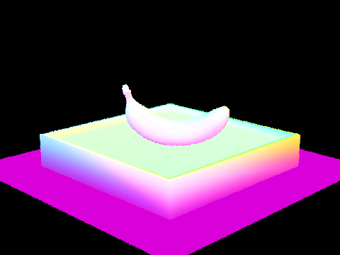
banana.dae
|
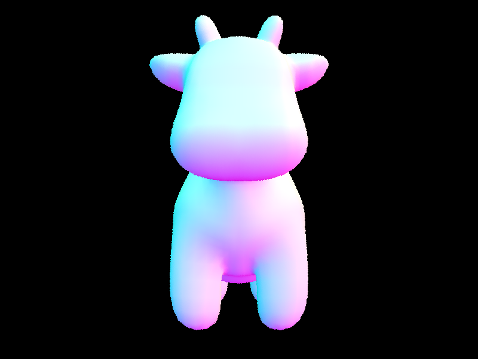
cow.dae
|
|
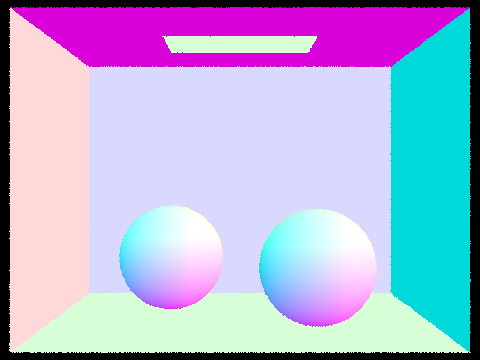
CBspheres.dae
|
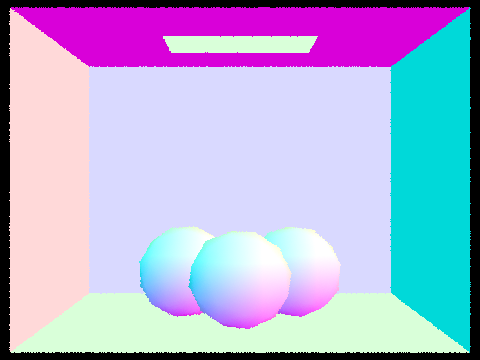
CBgems.dae
|
Part 2: Bounding Volume Hierarchy
In this part, I implemented a Bounding Volume Hierarchy (BVH) structure to greatly decrease the number of necessary ray-intersection tests to determine intersection. This was done by partitioning the scene space hierarchically or in a tree-like manner to allow for a more refined traversal of potential intersection candidates. In my implementation, I created a binary tree - other than leaf nodes, all nodes of the tree have 2 children nodes representing some division of space. My BVH construction algorithm recursively partitions a given space by picking the largest axis of the bounding box and splitting at the average centroid value of primitives/objects along that axis. This on average creates 2 child nodes with approximately equal number of primitives. This partitioning process is continued until a node holds at most ‘max_leaf_size’ number of primitives. Of course, this partitioning heuristic has a rare, degenerate case where all object centroids align along the longest axis of a space’s bounding box. In this case, we move the partition pointer such that all children nodes have at least one primitive.
This structure allows us to efficiently eliminate candidate primitives for the ray-intersection tests by testing with the overall bounding box of a space and only traversing into another node/space if there is a ray intersection with the parent bounding box. Once we reach a leaf node, we run the intersection test with each primitive in the node (which is typically much less than the number of primitives in the scene).
Example images with normal shading for a few large .dae files that you can only render with BVH acceleration.
|
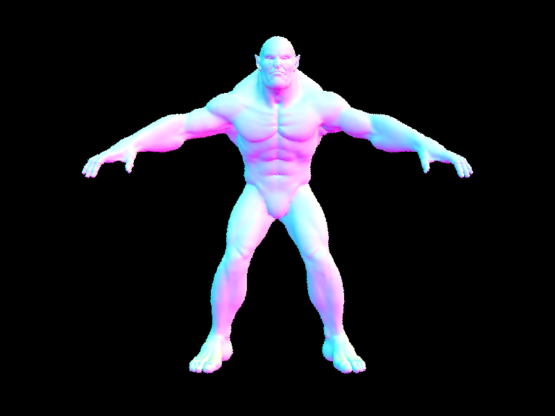
beast.dae
|
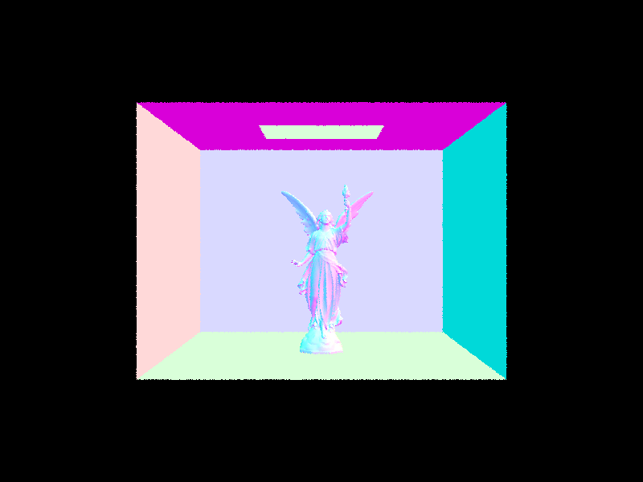
CBlucy.dae
|
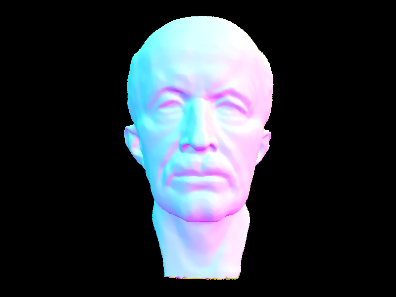
maxplank.dae
Rendering Metrics with and without BVH acceleration.
Renders + Results:
|
Small
Model: banana.dae
No BVH - 4.232 s to render.
552 intersections per ray.
With BVH - 0.0242s to render.
3.37 intersections per ray.
|
Medium
Model: cow.dae
No BVH - 30.421 s to render.
1334 intersections per ray.
With BVH - 0.1075s to render.
3 intersections per ray.
|
Large
Model: beast.dae
No BVH - 320.07 s to render.
13740 intersections per ray.
With BVH - 0.051 s to render.
2 intersections per ray.
|
To measure performance, I rendered 3 different scenes (each a different level of complexity) using the code in part 1 and took note of the time to render and the number of intersections per ray. For all 3 images, there was a significant reduction in rendering time when using the BVH (over 100x speedup). This speedup was especially noticeable when rendering “beast.dae” where the rendering time is on the order of minutes without the BVH and only a fraction of a second with the BVH. Interestingly, “beast.dae” rendered faster than “cow.dae” when they both used the BVH and almost as fast as “banana.dae” despite there being much more triangles in the underlying mesh.
The number of intersections per ray tells us that our BVH was successful in removing unnecessary ray-intersection checks. Without the BVH, we can see that the number of intersections per ray grows with the complexity of the scene - this is because we must perform an intersection test with every primitive for each ray that we cast. However, with the BVH, we are able to effectively eliminate candidate primitives and only check relevant primitives for intersection. Specifically, this narrows down the possible primitives to only a few regardless of the number of primitives in the scene. This metric seems to be constant in respect to the complexity of the scene.
Part 3: Direct Illumination
Direct illumination is implemented through the use of inverse ray tracing to determine whether a point is lit by some light source in the scene. This is useful to produce accurate shading, soft shadows, and hard shadows. When our camera ray reaches a point, we previously used basic shading based on the intersection of the surface normal. Instead, we could trace rays outward from the intersection point and check for intersections with any light sources and shade the pixel depending on the irradiance at the intersection point. In this part, I implemented 2 variants of direct illumination using 2 different sampling techniques - Uniform Hemisphere Sampling and Importance Sampling. In both cases, Monte Carlo estimators are used to approximate the illuminance of the intersection point.
In our estimate_direct_lighting_hemisphere function, we approximate the irradiance at the given intersection point by first sampling direction vectors from the unit hemisphere defined by the intersection point and the intersection normal. Next, we create rays that are defined by the intersection point and the sampled direction and test for intersection with other objects in the scene. For all rays that intersect a light source, we sum the radiance emitted weighted by the BSDF and the angle of the sampled direction. From this sum, we estimate the outgoing radiance (towards the camera) by dividing by the number of hemisphere directions sampled and the probability of each sampled direction (this is because all samples are equally likely).
In our estimate_direct_lighting_importance function, we sample a direction vector from the light source itself from the given intersection point. This is done by generating normalized direction vectors between the intersection point and the light source. Like in the previous method, we test for intersection using this direction vector; however, we constrain the ray such that we only test for intersections for points between the intersection point and the light source, non-inclusive. For rays with no intersection, we sum up the radiance emitted weighted by the BSDF, the angle of the sampled direction, and the probability of the sample. This gives us the Monte Carlo estimate for the outgoing radiance at the point for the specific light source. To get the total outgoing radiance of the point, we simply sum up the estimated radiance in respect to all light
sources in the scene.
Some images rendered with both implementations of the direct lighting function.
|
Uniform Hemisphere Sampling
|
Importance Sampling
|
 Fig.3-1 CBdragon.dae
Fig.3-1 CBdragon.dae
64 samples per pixel.
4 light rays.
|
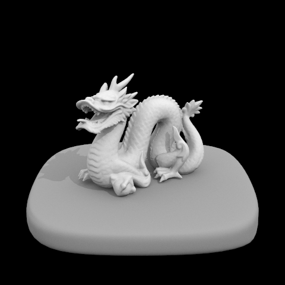
Fig.3-2 CBdragon.dae
64 samples per pixel.
4 light rays.
|
|
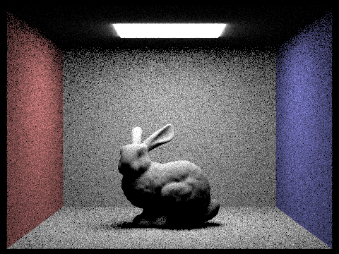
Fig.3-3 bunny.dae
64 samples per pixel.
4 light rays.
|
Fig.3-4 bunny.dae
64 samples per pixel.
4 light rays.
|
|
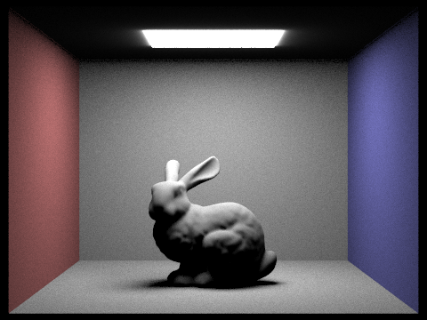
Fig.3-5 bunny.dae
64 samples per pixel.
128 light rays.
|
From the figures above, one of the most evident differences between the two implementations of direct lighting is the ability to render light from point light sources. Hemisphere sampling is completely unable to render the dragon scene because of the lack of an area light source. In hemisphere sampling, we perform ray-intersections with light sources; however, in our path tracing model, the probability of a random ray intersecting a point is zero. This results in a completely dark scene. With importance sampling, we consider the rays that exist between the scene point and the light source - giving us a 100% probability that we consider the radiance from a given point light source to any point in the scene. This is because when sampling a point light source, only 1 potential ray can exist between the 2 scene points.
However, the two sampling methods produce different results even with area light sources. When looking at Fig. 3-3 and Fig. 3-5, we can see that hemisphere sampling is able to create a nice bleeding of light around the edge of the top light source. Importance sampling would not be able to create this effect for the same reasons above.
Additionally, importance sampling significantly reduces the noise that is present in hemisphere sampling. In hemisphere sampling, we start at a point and send rays in seemingly arbitrary directions - for low sample rates, the rays are likely to hit no light source and result in a bad estimate of light. With importance sampling, we only consider the rays that could potentially bring light to a given scene point, which reduces the number of samples needed to produce more accurate estimates of light. Because we work with a set of rays that all exist between the scene point and the light source, an intersection means that the light is blocked. This is different from hemisphere sampling where each intersection is a potential source of irradiance. We can see from Fig. 3-5, that with enough light samples hemisphere sampling can produce less noisy images and results similar to importance sampling.
CBspheres_lambertian.dae noise levels in soft shadows
when rendering with 1, 4, 16, and 64 light rays and with 1 sample per pixel using
light sampling.
|
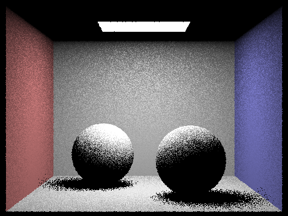
1 Light Ray
|
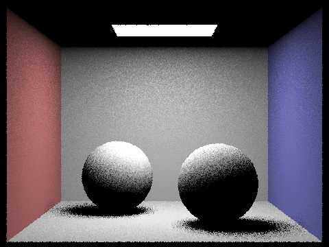
4 Light Rays
|
|
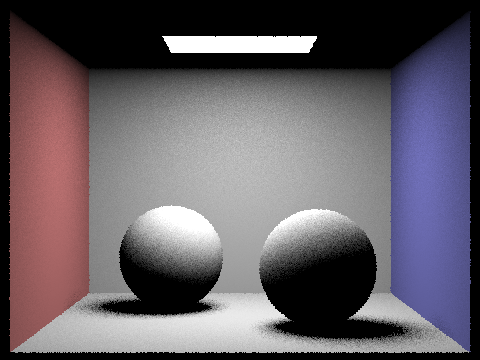
16 Light Rays
|
64 Light Rays
|
We can see that using importance sampling still results in some noise with low enough sample rates. As we increase the number of light rays traced, we see a significant improvement in noise. With more light rays, the pixels converge to their correct values.
Part 4: Global illumination
In this section, we wish to implement global illumination - allowing our objects to be illuminated by other objects in the scene. To do this, we implement a recursive method ‘at_least_one_bounce_radiance’. This function starts by computing the one-bounce radiance for a given intersection point by calling one of the direct illumination methods above. The one-bounce radiance is equivalent to the radiance estimate given by direct illumination. If we have reached our maximum ray depth (when checking the depth attribute of the ray), we do not recurse and just return the one-bounce radiance. Additionally, as per Russian Roulette, we use a random number generator to terminate the recursion (and return one-bounce radiance) with probability 0.30.
If we have not reached our maximum ray depth, we cast another ray into the scene to determine if our current point is further illuminated. This ray is sampled from the bsdf because we only wish to consider rays that will potentially change the outgoing radiance of our current point which is dependent on the material of the surface. It is important that when creating this ray that we update the depth attribute of the ray to avoid infinite recursion. This ray starts at our current intersection point and is casted out into the scene with no distance limit.
If the casted ray has no intersection or intersects with a light source, we terminate the recursion and simply return the one-bounce radiance.
If the ray intersects another object in the scene, we recursively call ‘at_least_one_bounce_radiance’ to estimate the amount of incoming radiance from the object. From there, we update our Monte Carlo estimate in a similar fashion to the methods in part 3 and return the outgoing radiance.
Some images rendered with global illumination.
|
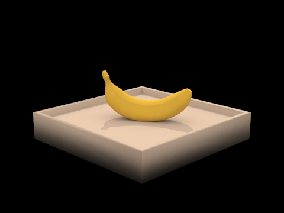
Fig.4-1 banana.dae
|
Fig.4-2 CBbunny.dae
|
Rendered bunny with only direct illumination and only indirect illumination.
|
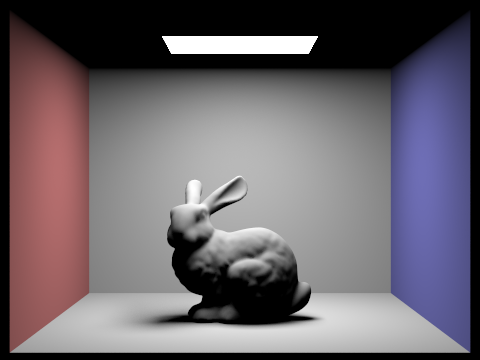
Only direct illumination (CBbunny.dae)
|
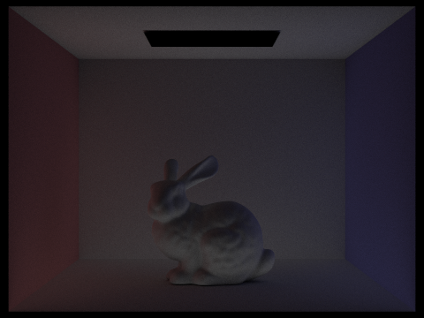
Only indirect illumination (CBbunny.dae)
|
The bunny on the left is identical to the rendered bunny in the previous part using importance sampling. The bunny on the right is only illuminated with indirect illumination. The direct and indirect illumination complement each other - they come together to form the global illuminated image in Fig.4-2. The indirect illumination is very dull relative to the direct lit bunny because we only consider light that has been bounced to that point in the scene. Although dim, we can observe that the indirect illumination has red and blue color bleeding on the bunny as a result of the color reflecting off of the walls. This color is not present in the directly lit bunny.
For CBbunny.dae, I rendered views with max_ray_depth set to 0, 1, 2, 3, and 100.
|
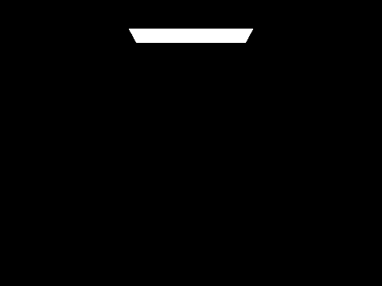
max_ray_depth = 0 (CBbunny.dae)
|
max_ray_depth = 1 (CBbunny.dae)
|
|
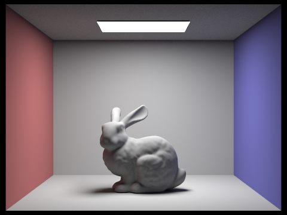
max_ray_depth = 2 (CBbunny.dae)
|
max_ray_depth = 3 (CBbunny.dae)
|
|
max_ray_depth = 100 (CBbunny.dae)
|
With max_ray_depth = 0, we only consider the light from the light source because we do not permit and light bouncing in the scene. At max_ray_depth = 1, we essentially observe direct illumination. Here, light bounces from the source into the scene and towards the camera.
At max_ray_depth = 2, we consider 2 bounces of light and finally get to observe global illumination in action! There is some color bleeding in the scene and the ceiling is a tad brighter. At max_ray_depth = 3 and 100, we observe the global illumination converging. Although brighter, we stop to view much of a difference in illumination.
Especially at max_ray_depth = 100, we notice that the light falls off seems to occur before we reach the max_ray_depth - this is because light loses it's power as it bounces throughout the scene.
CBspheres_lambertian.dae rendered views with various sample-per-pixel rates of 1, 2, 4, 8, 16, 64, and 1024.
All are rendered with max_ray_depth = 100;
|
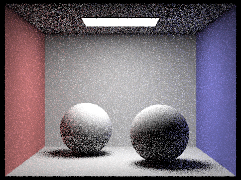
1 sample per pixel
|
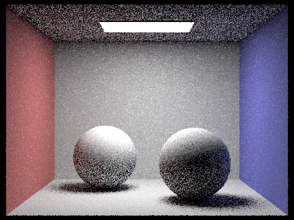
2 samples per pixel
|
|
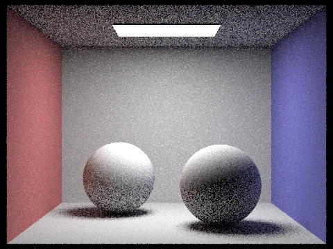
4 samples per pixel
|
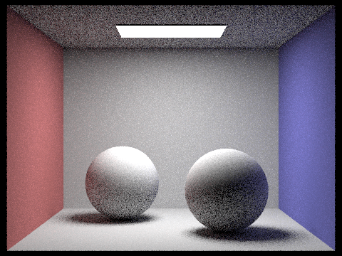
8 samples per pixel
|
|
16 samples per pixel
|
64 samples per pixel
|
|
1024 samples per pixel
|
We observe a similar story to the light rays experiment in part 3. At low sample rates, there is significant noise in the render - this may be caused by the fact that we pick a random direction in the hemisphere to bounce the light ray.
This means that it requires more samples to converge to our global illuminated scene. At 1024 samples per pixel, we observe a really smooth render!
Part 5: Adaptive Sampling
In this part, we implement an algorithm to reduce noise in our rendered results without significantly increasing our rendering times. This is done via adaptive sampling which changes the sampling rate per pixel depending on a convergence heuristic. For pixels that converge quickly we do not need to sample as aggressively and can short circuit our sampling to work on sampling pixels that may converge slower. Of course, we can always achieve less noise by increasing the number of rays casted per pixel, but this results in a lot of wasted sampling and computation for fast converging pixels.
This is implemented by keeping a running sum of the sample illuminance (s1) and a running sum of the square of the sample illuminance (s2). Using s1 and s2, we can compute the mean and standard deviation of the sample illuminances. Finally, we can compute the metric I = 1.96 * Std. Dev.(illuminance samples) * Sqrt(num. of samples). If “I” is less than or equal to “mean * maxTolerance” then we have successfully converged and stop casting rays for the current pixel. Note that because this test can be slow if performed after each sample, we only test for convergence once every “samplesPerBatch”.
Two scenes rendered with 2048 samples per pixel. Rendered image + Sample Rate image.
|
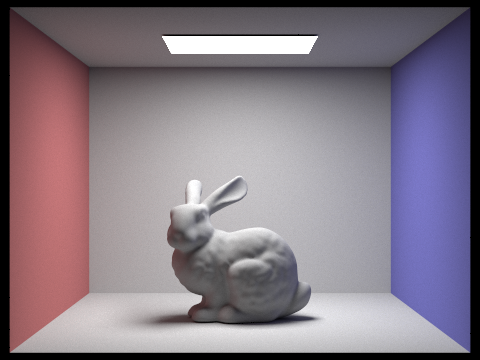
Rendered image (CBbunny.dae)
|
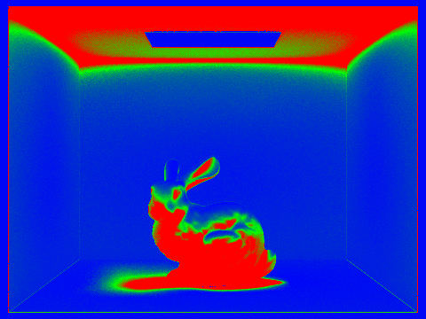
Sample rate image (CBbunny.dae)
|
|
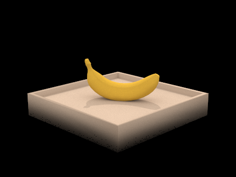
Rendered image (banana.dae)
|
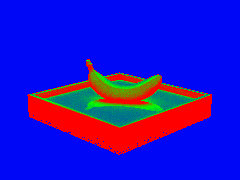
Sample rate image (banana.dae)
|